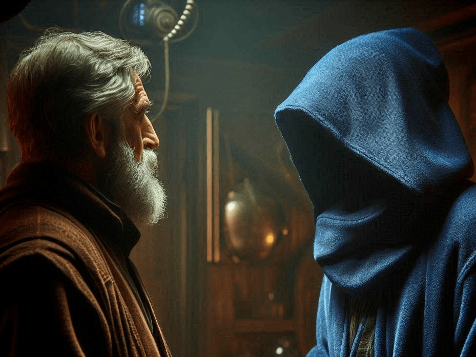
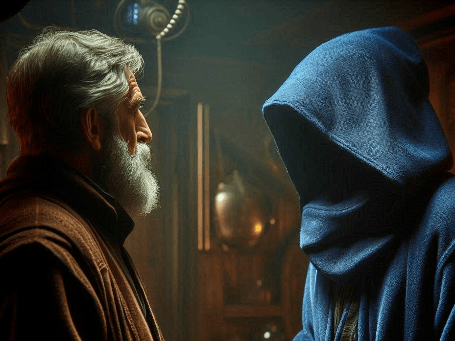

Ältester
Quelle: P1
Der Älteste rät dir in den alten Ruinen zu suchen. Er diente vor 200 Zyklen unter dem Kaiser Lumarias und versteckte damals das Artefakt in den Steinstrukturen der heiligen Stätte.
Quelle: P1
Der Älteste rät dir in den alten Ruinen zu suchen. Er diente vor 200 Zyklen unter dem Kaiser Lumarias und versteckte damals das Artefakt in den Steinstrukturen der heiligen Stätte.